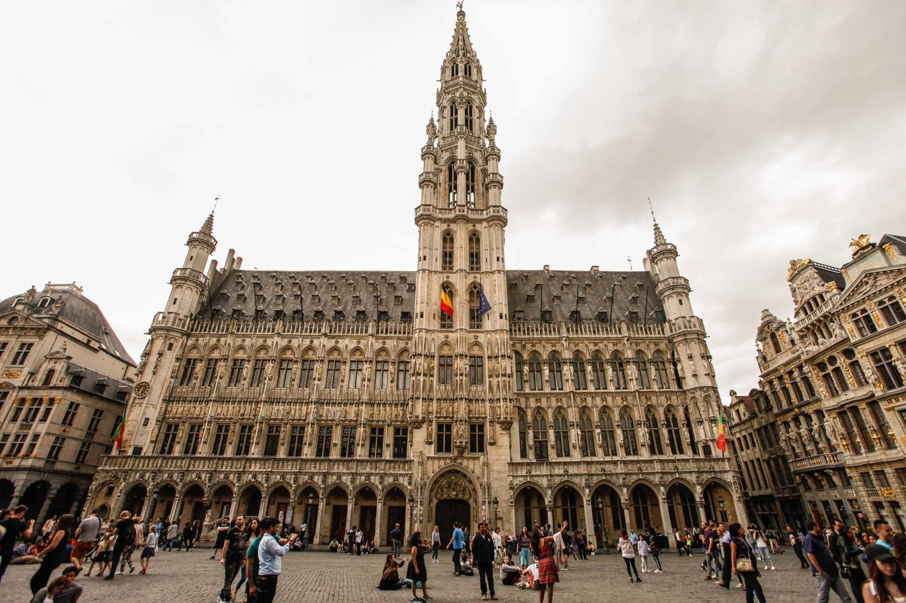
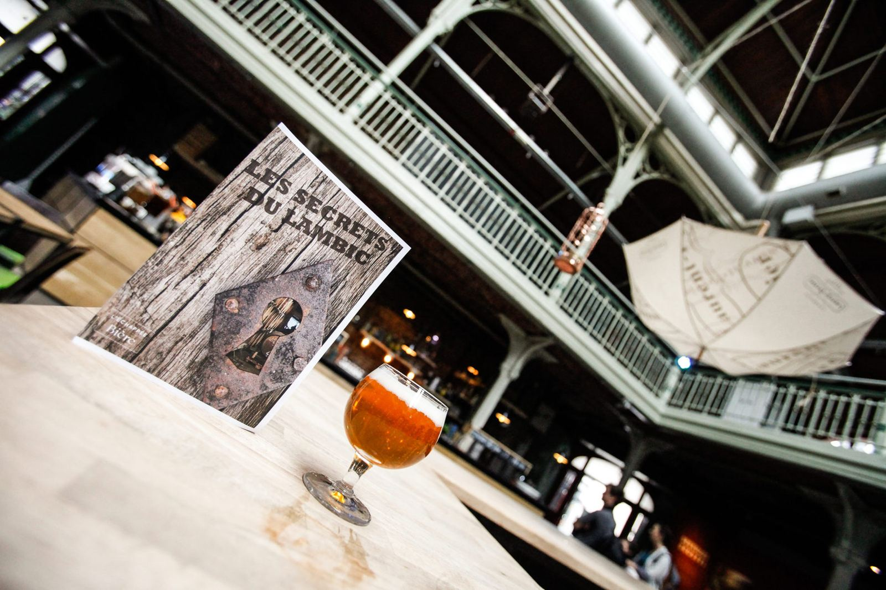

Jeu de piste bière
Des challenges, une découverte de la ville et des dégustations
Jeu de piste à Bruxelles : les secrets du lambic
À vos marques, prêts, explorez !
En équipe de 4 à 8 personnes (voire plus), partez pour une aventure captivante au cœur de Bruxelles ! Munis d’un roadbook, résolvez une enquête intrigante, relevez des défis et surtout… dégustez des galopins de bière à l’aveugle dans trois bars emblématiques. Mais attention, pour espérer la victoire, il faudra deviner les saveurs et remplir votre questionnaire de dégustation. Entre convivialité et compétition, qui saura briller ?
Un accompagnement fun et dynamique
Notre animateur vous accueille et reste disponible tout au long de l’aventure, jusqu’à la révélation des réponses et du grand gagnant. Prêts à relever le défi ?
Des défis pour tous !
Au programme : énigmes, défis photo, quiz d’observation et bien sûr, dégustations ! Un jeu idéal pour les amateurs de bière, les curieux et les aventuriers en quête d’une manière originale de (re)découvrir Bruxelles.
Une expérience accessible à tous
Pas fan de bière ? Aucun souci, optez pour un soft et profitez de l’expérience ! Une activité unique et festive, parfaite entre amis, en famille ou en couple.

Une expérience, deux versions !
Notre jeu de piste bière existe aussi en version bière & chocolat pour une aventure encore plus gourmande ! Découvrez tous les détails dans la fiche descriptive.